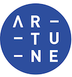

<section>
  <div class="container">
    <div class="row timeline-container">
      <div id="timeline" class="column timeline-left-side">
        <div class="" data-rellax-speed='1'>
          <h2 class="timeline-time"><span>2019.Sep - Current</span></h2>
          <dl class="timeline-series">
            <dt class="timeline-event" id="2015last"></dt>
            <dd class="timeline-event-content" id="2015lastEX">
              <div class="img-cut">  </div>
              <p> <a herf="https://www.wework.com/">WeWork</a>, Engineering Manager</p>
              <p>
                <ul>
                  <li>Manage team and resources to serve the development and operations of the Billing and Payment system</li>
                  <li>Manage the delivery of a user-facing product -  Account Overview, on mobile platform</li>
                  <li>Manage complex integration processes between local and global systems</li>
                  <li>Manage user's expectations</li>
                  <li>Manage stakeholder's expectations</li>
                  <li>Play the role of scrum master, organize meaningful and effective meetings/discussions</li>
                  <li>Be responsible for the overall outcomes</li>
                </ul>
              </p>

              <p>
                <h4>Billing System of WeWork China</h4>

                <ul>
                  <li>The billing system of WeWork China is a complex system. It consists of 11 micro-services. The system is integrated with a number of global systems from WeWork global and a number of local vendors. The system serves a number user groups including: WeWork customers, the finance team and the community team</li>
                  <li>Lead the development of the billing system</li>
                  <li>Support/manage the engineering team, coach and mentor developers</li>
                  <li>Identify the business and technical components/requirements</li>
                  <li>In charge of building delivery roadmap and the execution of the roadmap</li>
                  <li>Lead the communication between WeWork global, WeWork China</li>
                  <li>Lead the communication between WeWork and local vendors eg: Shouqianba, Baiwang Fapiao, Fadada etc.</li>
                  <li>Customize existing infrastructures to support the business in China creatively</li>
                  <li>Ensure releases be deployed regularly and smoothly</li>
                </ul>
              </p>

              <p>
                <h4>WeWork China APP</h4>
                <ul>
                  <li>The WeWork China App is a cross platform mobile App. It provides account centered billing information, room/desk booking, payment gateway and fapiao issuing features</li>
                  <li>As the manager of the team, lead the development of the Billing module of WeWork China App</li>
                  <li>Collaborate with other teams and manage the releases schedule of the App</li>
                  <li>Ensure each release of App provides a good and consistent experience to WeWork members</li>
                </ul>
              </p>

            </dd>
          </dl>
        </div>


        <div class="more-margin" data-rellax-speed='1'>
          <h2 class="timeline-time" data-rellax-speed='2'><span>2017.June-2018.Jan</span></h2>
          <dl class="timeline-series">
            <dt class="timeline-event"></dt>
            <dd class="timeline-event-content">
              <div class="img-cut">  </div>
              <p><a herf="https://www.volunteerhq.org/">International Volunteer HQ</a>, Sr Developer</p>
              <ul>
                <li>Develop large scale platform for the world leading <a herf="https://www.volunteerhq.org/">volunteering travel company</a></li>
                <li>Develop payment gateway and an internal billing sub-system</li>
                <li>Develop/Apply AdTech</li>
              </ul>
            </dd>
          </dl>
        </div>

        <div class="more-margin" data-rellax-speed='1'>
          <h2 class="timeline-time rellex" data-rellax-speed='2'><span>2015-2016</span></h2>
          <dl class="timeline-series">
            <dt class="timeline-event" id="2015last"></dt>
            <dd class="timeline-event-content" id="2015lastEX">
              <div class="img-cut">  </div>
              <p> <a href="https://www.safer.me/features/">ThunderMaps</a>, Sr Developer </p>
              <ul>
                <li><a href="https://www.safer.me/features/">ThunderMaps</a> is a mobile platform build on top of GIS system. It helps users sharing/save information with location data</li>
                <li>Identify the challenges, help the company adapt a new tech stack</li>
                <li>Be part of a sales-driven team, develop a brand new mobile App (<a href="https://www.safer.me/features/">ThunderMaps</a>) in Cordova and Ionic</li>
                <li>Mentor new developers</li>
                <li>Develop and operate backend services</li>
              </ul>
            </dd>
          </dl>
        </div>

        <div class="more-margin rellax" data-rellax-speed='2'>
          <h2 class="timeline-time rellex" data-rellax-speed='1'><span>2014-2015</span></h2>
          <dl class="timeline-series">
            <dt class="timeline-event" id="2014"></dt>
            <dd class="timeline-event-content" id="2014EX">
              <div class="img-cut">  </div>
              <p> Figured, Sr Developer </p>
              <ul>
                <li>Figured is a cloud accounting SaaS. It helps famers get the complete picture of their business</li>
                <li>Develop a new cloud accounting SaaS</li>
              </ul>
            </dd>
          </dl>
        </div>

        <div class="more-margin rellax" data-rellax-speed='2'>
          <dl class="timeline-series">
            <h2 class="timeline-time"><span>2010-2012.Dec</span></h2>

            <dt class="timeline-event" id="2012"></dt>
            <dd class="timeline-event-content" id="2012EX">
              <div class="img-cut">  </div>
              <p> Master of Information Science Otago Uni </p>
              <p>
                <ul>
                  <li>My research areas are Pattern Matching, AI and Heterogeneous Parallel Computing</li>
                  <li>Went though pressure, time and financial difficulties on a day-to-day basis with a little help and encouragement</li>
                  <li>Thank everyone who helped me during this period of time</li>
                </ul>
                <div class="more-margin"></div>
              </p>
            </dd>
          </dl>
        </div>
      </div>

      <div id="timeline" class="column timeline-right-side">
        <div class="more-margin" data-rellax-speed='3'>
          <h2 class="timeline-time"><span>2018.Mar- 2019.Sep</span></h2>
          <dl class="timeline-series">
            <dt class="timeline-event" id="2015last"></dt>
            <dd class="timeline-event-content" id="2015lastEX">
              <div class="img-cut">  </div>
              <p> <a href="https://dovetailstudios.com/">Dovetail</a>, Project Lead</p>
              <p>
                <h4>Mahi</h4>

                <ul>
                  <li>Mahi is an engagement management platform for KPMG. It has been employed cross multiple divisions, support 3 serves lines and 10+ accounting job types</li>
                  <li>Mahi is a highly distributed system, it is connected to a number of services (microservices) via database connection, JSON API, and LDAP</li>
                  <li>Lead the development of Mahi</li>
                  <li>Help clients identify requirements</li>
                  <li>Provide technical solutions</li>
                  <li>Manage deliver, backlog, and incidents</li>
                  <li>Ensure that releases happen regularly and smoothly.</li>
                  <li>Communicate with clients across multiple divisions</li>
                </ul>
              </p>

              <p>
                <h4><a href="https://www.afterpay.com/en-NZ/index">AfterPay</a></h4>
                <ul>
                  <li>AfterPay is leading the “buy now pay later” industry. It has 3.1 million active users and valued at 6 billon USD</li>
                  <li>AfterPay is built on top of two distributed systems, one for content management and one for payment processing</li>
                  <li>Provide technical solutions</li>
                  <li>Implement UI/UX designs</li>
                  <li>Manage deployment/operation(DevOp)</li>
                  <li>Manage/optimise the architecture/efficiency of the system in the big picture</li>
                </ul>
              </p>
            </dd>
          </dl>
        </div>

        <div class="timeline-wrapper more-margin rellax" data-rellax-speed='2'>
          <h2 class="timeline-time" data-rellax-speed='2'><span>2017.Dec-2018.Mar</span></h2>
          <dl class="timeline-series">
            <dt class="timeline-event" id="2015last"></dt>
            <dd class="timeline-event-content" id="2015lastEX">
              <div class="img-cut">  </div>
              <p> <a href="https://artune.co/">Artune</a>, Tech Lead</p>

              <ul>
                <li><a href=https://itunes.apple.com/us/app/artune/id1323069875?mt=8"">Artune</a> is a social network designed for artists and art collectors</li>
                <li>Lead technical direction of Artune</li>
                <li>Hire and lead a dynamic DevOp team, Deliver an MVP in couple months</li>
                <li>Deploy and manage a number of AWS services/instances(EC2 RDS S3 CloudFront)</li>
                <li>Develop an artists/collectors Social Network <a href=https://itunes.apple.com/us/app/artune/id1323069875?mt=8"">App on Mobile</a> with <b>React Native</b> and <b>Rails</b>, Deploy and manage <b>AWS</b> server instances</li>
              </ul>
            </dd>
          </dl>
        </div>

        <div class="timeline-wrapper more-margin rellax" data-rellax-speed='2'>
          <h3 class="timeline-time rellex" data-rellax-speed='2'><span>2016.Feb-2017.June</span></h3>
          <dl class="timeline-series">
            <dt class="timeline-event" id="current"></dt>
            <dd class="timeline-event-content" id="currentEX">
              <div class="img-cut">  </div>
              <p> NZX, Sr Developer </p>
              <h4><a href="https://www2.electricityinfo.co.nz/">WITS</a></h4>
              <ul>
                <li><a href="https://www2.electricityinfo.co.nz/">WITS</a> is the energy trading system of New Zealand, it is a multi-tier complex system </li>
                <li>Identify the requirements and provide the technical solutions</li>
                <li>Implement the new energy trading system of New Zealand (WITS)</li>
                <li>Lead the development of data visualization of WITS</li>
              </ul>
              <h4>RECON</h4>
              <ul>
                <li>Recon is the New Zealand electricity reconciliation portal. It has a complex database backend built with PL/SQL and a web portal</li>
                <li>Lead the development of New Zealand electricity reconciliation portal. Successfully provide an intuitive UX to a complex process</li>
              </ul>
            </dd>
          </dl>
        </div>

        <div class="timeline-wrapper more-margin rellax" data-rellax-speed='2'>
          <h2 class="timeline-time rellex" data-rellax-speed='1'><span>2013.Mar-2014</span></h2>
          <dl class="timeline-series">
            <dt class="timeline-event" id="2013"></dt>
            <dd class="timeline-event-content" id="2013EX">
              <div class="img-cut" id='nzx'>  </div>
              <ul>
                <li>NZX is the stock market, electricity market operator of New Zealand. <a href="https://www.nzx.com/">NZX.com</a>  is the go-to place for stock information in New Zealand. <a href="https://www.nxt.co.nz/">NXT.com</a> is a new investing channel for start-ups and small-cap</li>
                <li>Develop highly distributed systems. (NZX.com, NXT.co.nz)</li>
              </ul>
            </dd>
          </dl>
        </div>
      </div>
    </div>
  </div>
</section>

